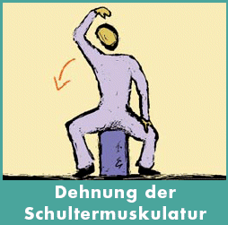
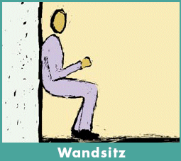
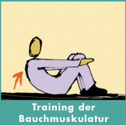
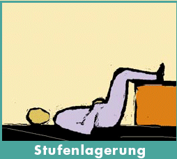
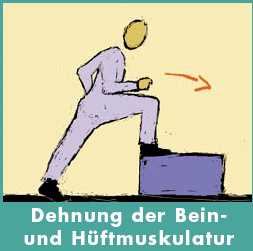

Wer ein ganzes Arbeitsleben im Beruf bestehen will, muss sich fit halten. Die Arbeit trainiert zwar, kann aber oft zu einseitigen Fehlbelastungen führen.
Einfache Entlastungs- und Kräftigungsübungen gleichen diese Defizite aus.




